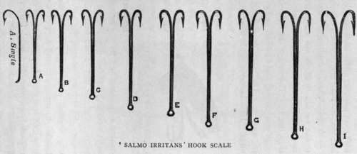
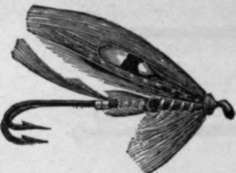
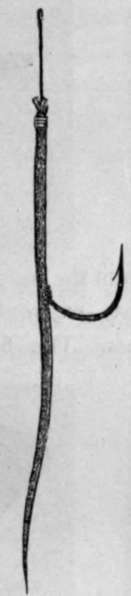
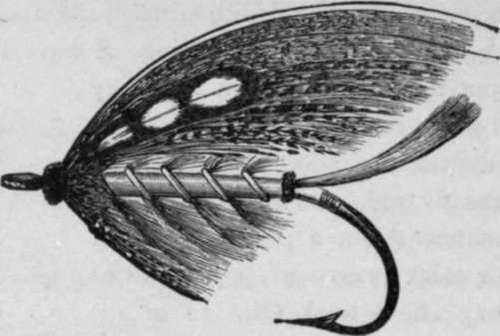
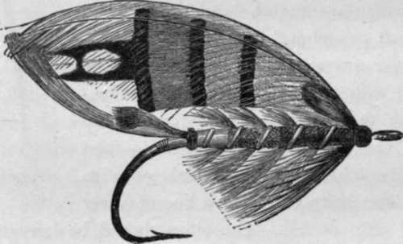
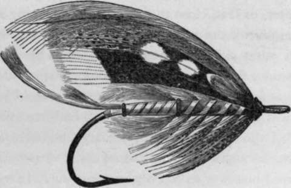
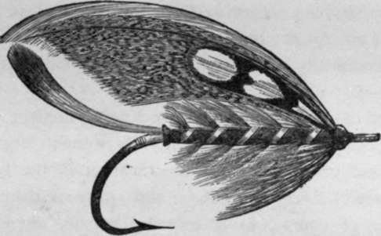

Fly Fishing In The Sea. Part 3
Description
This section is from the book "Sea Fishing", by John Bickerdyke. Also available from Amazon: Sea Fishing.
Fly Fishing In The Sea. Part 3
Another instance of salmon taking the fly occurs in the Fleet, a piece of water between Dornoch and Goldspie, on the coast of Sutherlandshire. There the fly is worked systematically during the first few hours of the flowing tide.
There are a great many instances on record of salmon taking baits of various kinds in salt water, and a good many rivers where sport is had on the tidal pools. On the other hand, there are very many places where salmon rarely rise until they have reached fresh water.
A friend of mine living in the north of Scotland once caught a salmon of lbs. in the sea on a worm. Now and again salmon smolts are taken in the sea on the white flies used by cuddy fishers. Most anglers are probably aware that in Vancouver the salmon take both spoon bait and fly in the sea.
That sea trout may be caught in various ways by fair angling in salt water is well known to men who have visited the north of Scotland and the outlying islands. A great deal of fly fishing is carried on for them in the brackish water of the estuaries of most rivers which they frequent. Sea trout in fresh water are uncertain fish; they will suddenly begin rising with the greatest vigour, and as suddenly cease ; and after they have been in the river a few days they have the unhappy knack, from our point of view, of rising extremely short. In tidal pools they often rise very well.
I may refer here to a double hook which I designed for some short-rising salmon and sea trout. How I came to require its use is described under the heading ' Salmo Irritans' in a collection of sketches of life in the Hebrides called ' Days in Thule.' Suffice it here to say that, finding many fish plucked at ordinary flies and yet were not hooked, I conceived the idea of lengthening the shank without enlarging the bend ; for it has always seemed to me that after the bend has been increased up to a certain size, further enlargement is not required. A longer shank is, of course, necessary for a larger fly, but it is not requisite to enlarge the bend.
Messrs. Warner & Sons, the firm of Red-ditch hookmakers, carried out this idea extremely well for me, and made a whole scale of double hooks on this system. I have not had an opportunity of trying the largest hooks of the scale, but the smaller ones answer excellently. I have caught many a salmon and sea trout through their instrumentality. The scale of these hooks and also a fly tied on them are illustrated. The proportion shown between body, wings, tail and hooks should be carefully followed when flies are being dressed on this system.
I have sometimes seen sea trout follow the fly, making pecks at it like a bird making bad shots at a worm ; but it was rare indeed that they actually touched the hook without being caught. I mention these hooks here because they are well suited for sea trout fishing in the sea. I imagine other anglers are beginning to overcome their prejudice to the novel shape, for I see the hooks at Farlow's and other tackle-makers. I may add that they are not patented or protected in any way.
In Orkney and the adjacent islands it is a common practice to fish for sea trout in salt water, but the worm, which is cast by means of a fly rod, is a more favourite and more killing bait than the fly. The largest sea trout are, as a rule, found on the edge of a tideway and close to rocks on which there is a growth of seaweed. They are exceedingly shy when the water is clear. It is better to wade than to fish for them from a boat.
Casting a sole-skin bait he was fortunate enough to catch two trout weighing between nine and ten pounds each. They were taken within six feet of the beach in about sixteen inches of water. In Orkney, he says, the only killing fly for sea trout is one dressed with a fiery brown cock's hackle tied Palmer fashion to imitate a sand-hopper, and either with or without wings of speckled grey feather of some kind. The brightly coloured sea-trout flies used farther south have not proved killing.
Another bait used with much success and cast like a fly in that part of the world is a mouse's tail, which is baited in the following manner : The gut on a common round-bend worm.
SKA-TROUT FLY ON 'SALMO IRRITANS' HOOK.
Sometimes they will take neither worm nor fly, showing a preference for a sole-skin sand eel, which hooks more fish than baits which spin. The fish are mostly found in water varying from two to five feet.
Mr. Moodie-Heddle, of Orkney, tells me that once when hook (without eye or flattened end) is softened and threaded on a needle which is entered three-quarters of an inch from the end of the tail and brought out at the thick end. The hook-shank is then pulled up through the point of entry, and the thick end of the tail firmly bound round with crimson silk above the end of the hook shank to prevent it slipping. I have little doubt that the trout look upon this bait as a very small eel or worm of some kind.
A capital artificial sand-eel, which can be cast with the fly rod, can be made in the following manner : Get a piece of copper bell wire, or thick brass wire, 2 3/4 inches or 3 inches long; tie a hook (No. 12 or 13) firmly to one end ; slip the other end through a piece of greyish-white rubber tubing, such as is used for feeding-bottles, which can be bought cheaply by the yard. The tail end should be cut sloping, and sliced at side of tail so as to make it vibrate ; the end of wire coming out at mouth should be attached to a small phosphor bronze, brass, or German silver swivel. The back should be coloured with two coats of Stephens' blue-black ink, the first coat being brought one-third of the way down the side also ; then varnish the inked part, which makes it olive green. The belly can have a line of silver paint or strip of foil. The sides should be left white, and if they get discoloured scraping with a penknife will freshen them up. Two pink beads, with a black circle round each drawn on the indiarubber in ink, represent eyes. The neck should be tied in with greenish silk. One hook is better than two in clear water and near weeds ; and if an occasional from the beach with a 16-ft. rod, Mr. Moodie-Heddle caught five sea trout, one summer's day, when the fly was quite useless. The fish were in four feet of very clear water where the weeds were plentiful. There was no tide ; the wind was slight, and the day sunny. This bait can, of course, be made to spin by curving the wire inside the tubing. The sole-skin fish may miss it, the consolation is that fewer rises are obtained with more complicated tackle.
MOUSETAIL.
LION.
DURHAM RANGER.
Wading in about two feet of water, and casting this bait bait already mentioned, with the small strip of lead sewn into the belly to make it swim upright, is so light that it can be easily cast.
JOCK SCOTT.
The four flies on which I should be inclined to pin my faith for sea trout in the sea and estuaries, are a blue or silver Doctor, Thunder and Lightning, Jock Scott, Durham Ranger, and the Alexandra. It is very important, however, not to have these too large, and Mr. Moodie-Heddle's recommendation of more sober-coloured flies for the Orkneys should be borne in mind.
THUNDER AND LIGHTNING.
Continue to:
Tags
fishing, hooks, bait, fishermen, spanish mackerel, mackerel fishing